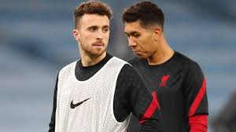

Jota's sensational start is not a headache for Klopp

Diogo Jota has made a stunning start to live at Liverpool
Liverpool manager Jurgen Klopp insists Diogo Jota's sensational form has not given him a headache when it comes to breaking up his established front three.
Much of the success Klopp has had, winning the Champions League and the Premier League, has been down to the way Mohamed Salah, Sadio Mane and Roberto Firmino have combined on the forward line. However, Firmino was dropped for the 5-0 Champions League win against Atalanta in Bergamo to make way for the in-form Diogo Jota and the new signing seized his chance with a hat-trick. The former Wolves player has scored six goals in the last 10 days and already has more goals for the club in 2020 (seven) than Firmino (five). And while some may see that as being a problem for the Brazil international, Klopp views it differently.
"Good performances never give me a headache," he said.
"For tonight the decision it was clear. It made sense to use the good shape Diogo is in and because of the way Atalanta plays and defends the skillset of Diogo helps.
"But the world is sometimes a bad place that in a moment when someone is shining we speak immediately about another player - who it feels like played for us 500 games in a row and we wouldn't be in the Champions League if Bobby Firmino is not with us - and I have to explain why he is not in the team. He will be in the team.
"It is important we have more than 11 and tonight Diogo played a super game and that says nothing about Bobby and nothing to do with causing me headaches.
"I am more than happy the boys played like they played tonight."
Mohamed Salah and Sadio Mane were the other scorers on a night when last season's high-scoring quarter-finalists were blown away.
It means Liverpool have won their opening three group matches for the first time and have already opened up a five-point lead at the top of Group D with two home matches to come.
"Everything I said (about Atalanta) before the game was 100 per cent true," added Klopp.
"I've been long enough in this business to see when another team is playing good football and can cause any team problems. That didn't change because of the game tonight. "We are good as well. We know that we have to play good and fulfil our potential and we did that. "We defended Atalanta on an incredibly high level and played ourself top football and scored the goals.
"We scored five goals and could have scored two or three more but Alisson had to make three world-class saves as well so you see how big the threat is when you let them do what they are good at.
"All the performances of my team tonight was good and that is why we won the game, the result is not that important, we just wanted to win."
Atalanta coach Gian Piero Gasperini admits their defensive problems are a cause for concern.
"We struggled with the pace of the game. Let's see the next games, we have time to work on ourselves," he said.
"We are conceding too much lately and scoring less, we didn't run enough and not well enough - all things we must work on."